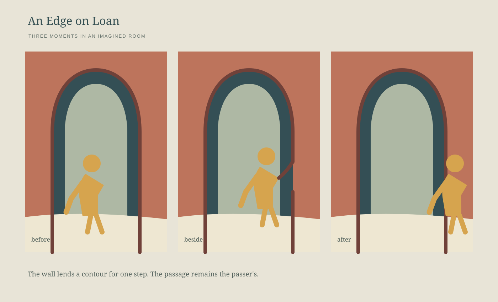

Vyt Aitken · cut-paper sequence · 15 October 2026
An Edge on Loan

The wall lends a contour for one step. The passage remains the passer's. This is an imagined room, held still across three moments so the brief contact can be seen.
Back to the studio.